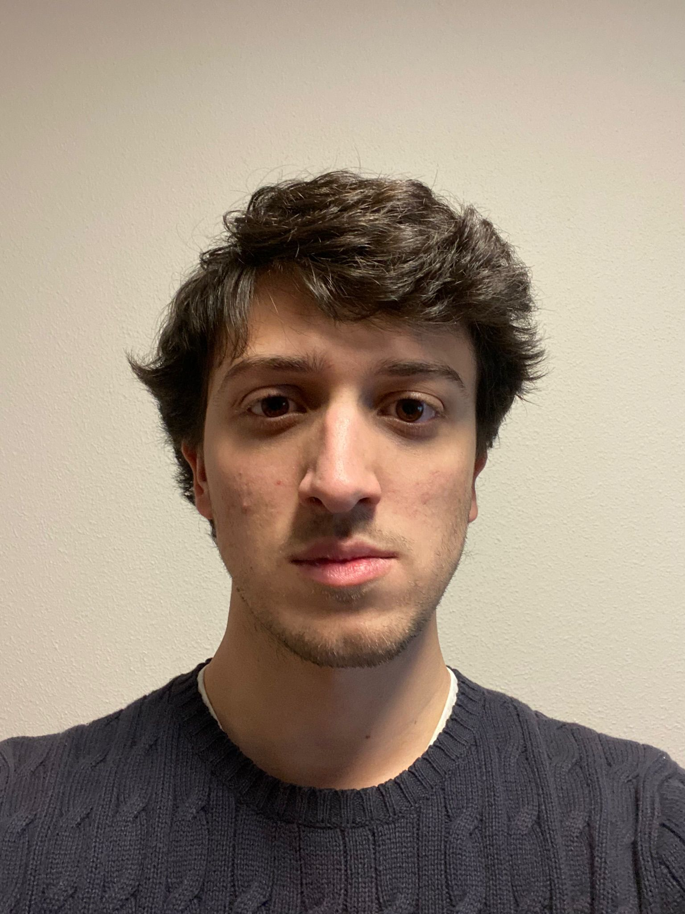
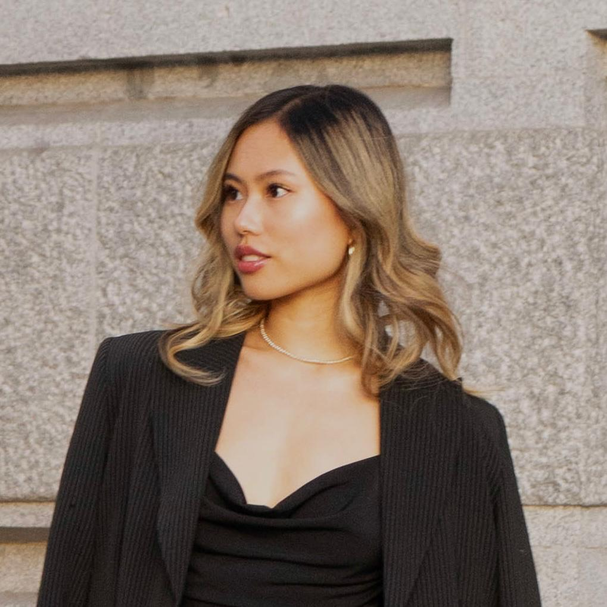
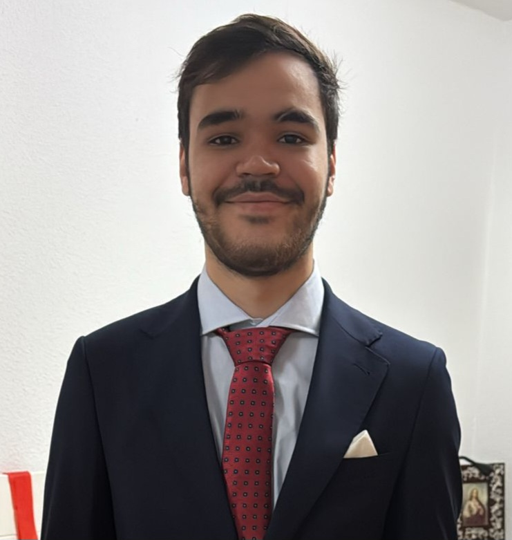

Miembros del Grupo
- Héctor Manuel Díaz Bernal
- Ángela Meirás Seisdedos
- Ramón Andrés Salazar Gutiérrez
- Miguel Sevilla Benito
Héctor Manuel Díaz Bernal

Email: hediaz01@ucm.es
Amante de la fotografía culinaria. Le encanta viajar para descubrir nuevos sabores e innovar en cada una de sus recetas.
Ángela Meirás Seisdedos

Email: angelmei@ucm.es
Creativa y perfeccionista. Ama experimentar con recetas y busca la combinación de sabores para ofrecer experiencias únicas.
Ramón Andrés Salazar Gutiérrez

Email: rsalaz01@ucm.es
Sociable y positivo. Desea que cada cliente disfrute de su cocina haciendo de cada plato una experiencia inolvidable.
Miguel Sevilla Benito
Email: misevi02@ucm.es
Amante del diseño y la comunicación. Disfruta creando contenido digital y gestionando las redes sociales.